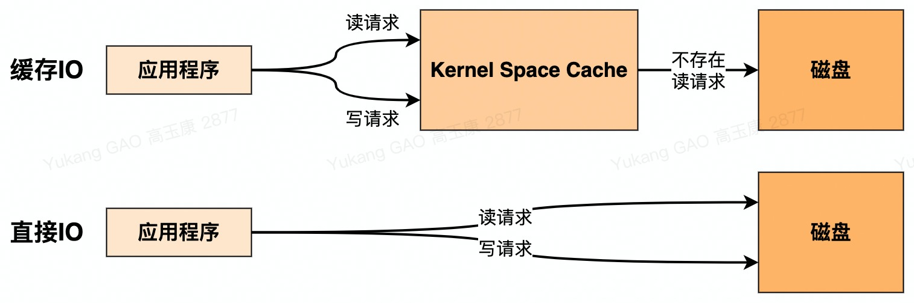
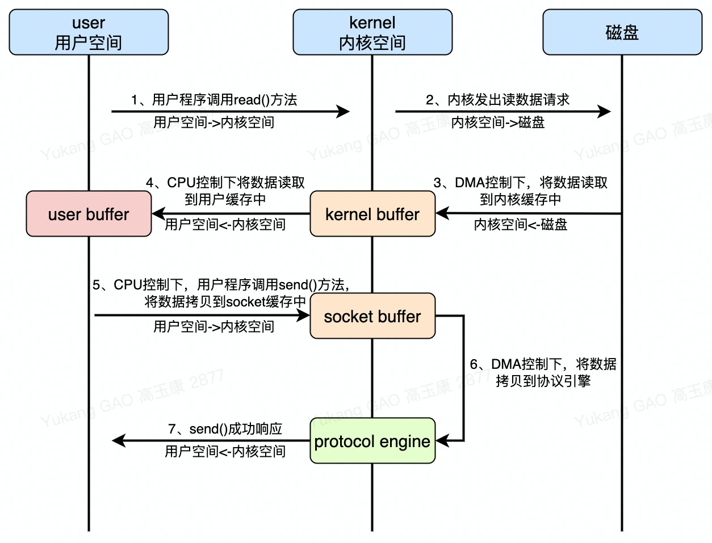
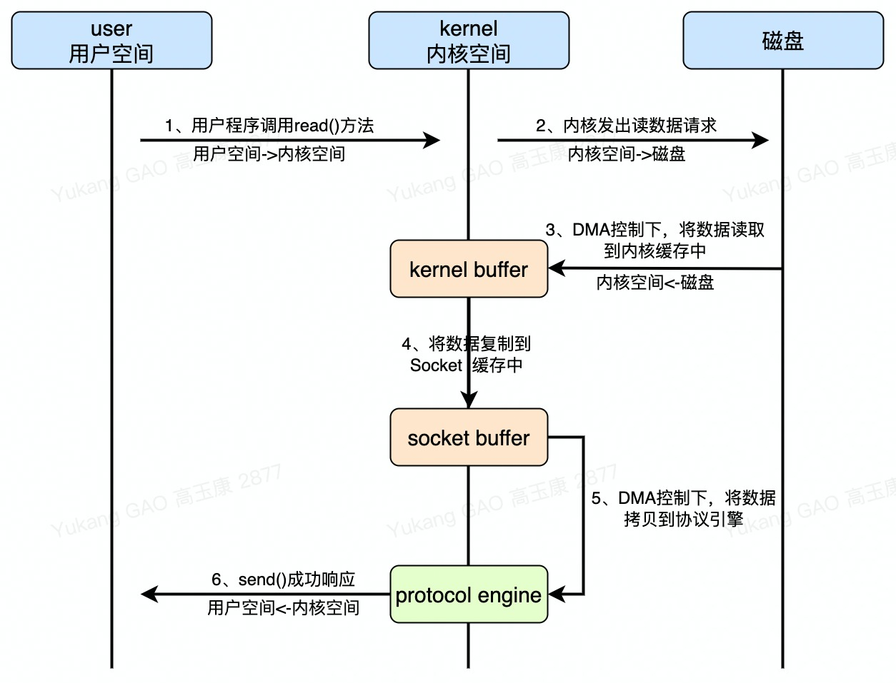
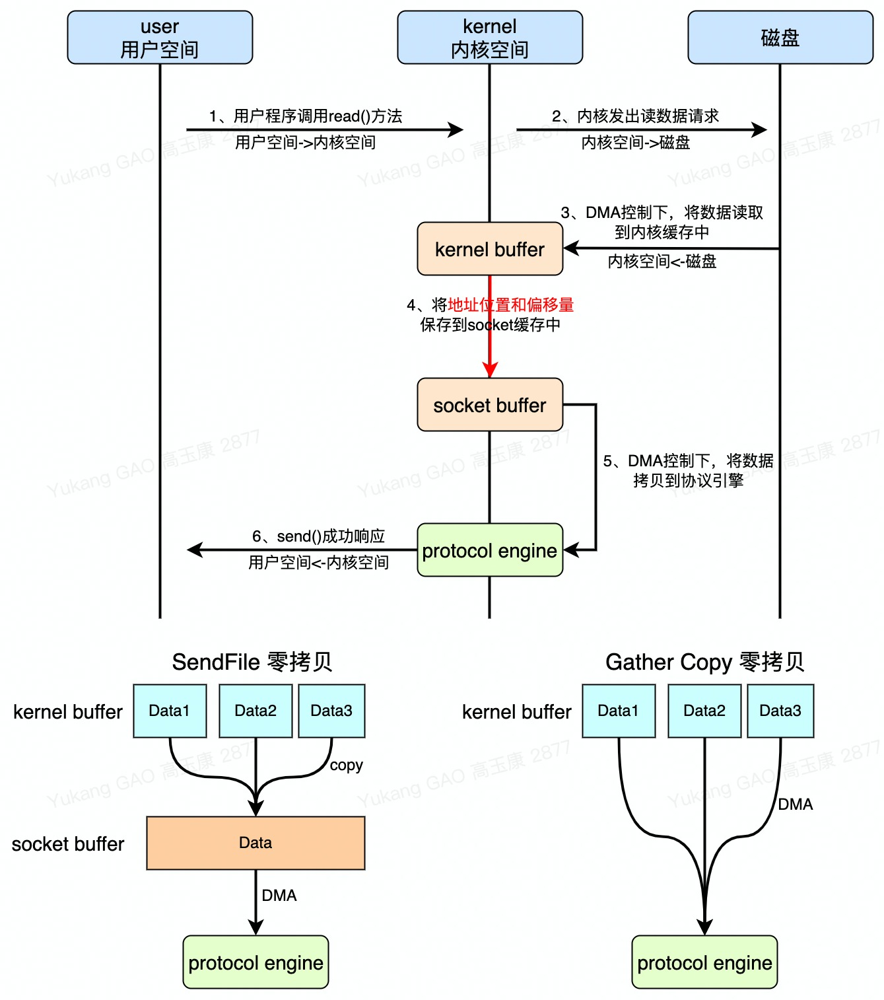
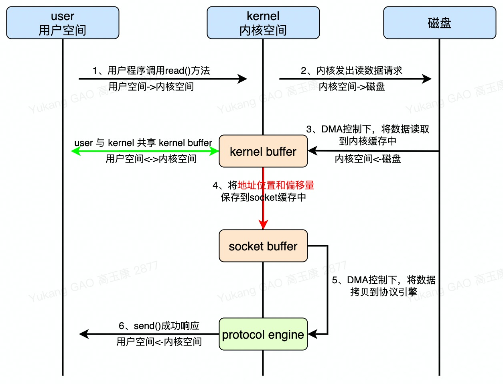
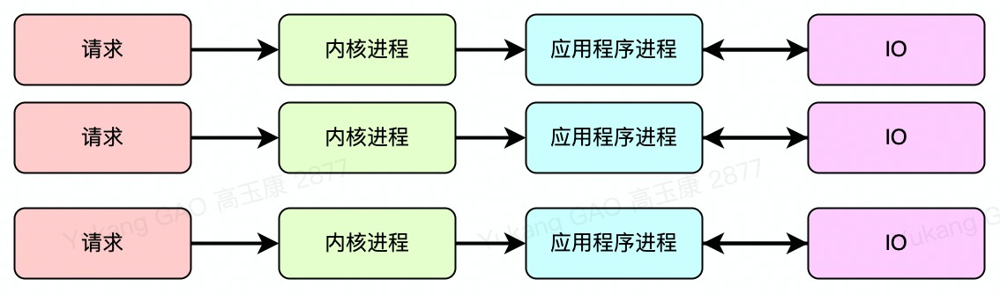
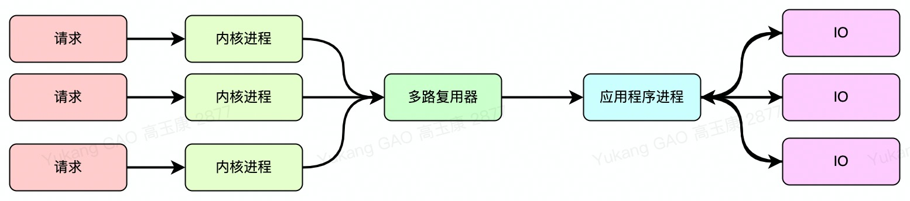

51介绍2 User Space(用户空间)和 Kernel Space(内核空间),Kernel space是Linux内核的运行空间，User Space是用户程序的运行空间。为了安全，它们是隔离的，即使用户的程序崩溃了，内核也不受影响。3
4区别5 Kernel Space可以执行任意命令，调用系统的一切资源；User Space只能执行简单的运算，不能直接调用系统资源，必须通过系统接口(System Call)才能向内核发出指令。
概念
361缓存IO与直接IO2 缓存IO 3 -> 介绍:(标准IO，默认)通过DMA将数据拷贝到Kernel Space并缓存，在从Kernel Space拷贝到User Space。4 -> 读操作:System先从Kernel Space 缓存中查找是否存在当前数据，存在返回给User Space，不存在从磁盘上拷贝并缓存。5 -> 写操作:将数据从User Space拷贝到Kernel Space Cache中，此时对用户程序来来说写操作完成。啥时候缓存到磁盘上是系统决定，使用sync(强制刷盘)会立即刷盘。6 -> 优点:使用内核空间，保证了系统自身的安全；减少了读磁盘的次数，提高性能。7 -> 缺点:数据从Kernel Space拷贝到User Space过程中有CPU参与，比较耗性能。8 -> 应用:Redis、Tomcat。9 直接IO10 -> 介绍:通过DMA将数据数据从磁盘直接拷贝到User Space。11 -> 优点:不实用Kernel Space Cache节约了内存，减少了拷贝次数；全程无CPU参与。12 -> 缺点:在用户程序不做缓存的话，每次读取数据都会从磁盘上读取，比较耗费性能。13 -> 应用:MySQL。14 使用: Linux系统函数open()，O_DIRECT 参数直接IO访问；O_SYNC缓存IO(写请求时会立即把数据写入磁盘避免丢失)。15
16磁盘IO与网络IO17 磁盘IO18 -> 介绍:读取写入数据时，通过磁盘来获取到数据，包括缓存IO和直接IO。19 -> 性能:由磁盘的性能决定(机械转动延时[2ms]+寻址延时[2ms]+块传输延时[0.1ms])。20 网络IO(参考下边零拷贝)21 -> 介绍:数据的读取与写入都是从Socket中读取。22 -> 性能:性能是由网络速度决定(响应延时 + 带宽限制 + 网络延时 + 跳转路由延时 + 本地接收延时)。 23
24同步IO与异步IO25 理解: 同步IO、异步IO时针对应用程序和内核的交互方式。26 同步IO27 -> 介绍:用户进程触发IO操作并"等待或者轮询"的去查看IO操作是否就绪。28 异步IO29 -> 介绍:用户进程触发IO操作以后便开始做其他的事儿，而当IO操作就绪，会停下来进行IO处理。30 31阻塞IO与非阻塞IO32 理解: User Space与Kernel Space IO的操作方式。33 阻塞IO34 -> 介绍:User Space掉系统函数与Kernel Space发送IO操作时是需要阻塞等待结果。35 非堵塞IO36 -> 介绍:User Space掉系统函数与Kernel Space发送IO操作时不需要等待结果立即返回。IO模型
411、同步阻塞IO(Blocking IO): 即传统的IO模型。22、同步非阻塞IO(Non-blocking IO): 非阻塞IO要求socket被设置为NONBLOCK(注意这里所说的NIO并非Java的NIO(New IO)库)。33、IO多路复用(IO Multiplexing): 经典的Reactor设计模式，有时也称为异步阻塞IO，Java中的Selector和Linux中的epoll都是这种模型。44、异步IO(Asynchronous IO): 经典的Proactor设计模式，也称为异步非阻塞IO。 Java Socket Code
631// 客户端2public class SocketClient {3 public static void main(String args[]) throws Exception {4 // 创建Socket对象5 String host = "127.0.0.1";6 int port = 55533;7 Socket socket = new Socket(host, port);8
9 // 写出10 OutputStream outputStream = socket.getOutputStream();11 String message = "hello world"; 12 socket.getOutputStream().write(message.getBytes("UTF-8"));13
14 //释放资源15 outputStream.close();16 socket.close();17 }18}19
20// 服务端21public class SocketServer {22 public static void main(String[] args){23 // 服务端监听 socket对象24 int port = 55533;25 ServerSocket server = new ServerSocket(port);26 27 // 线程池，防止并发过高时创建过多线程耗尽资源28 ExecutorService threadPool = Executors.newFixedThreadPool(100);29 30 // 死循环一直等待31 while (true) {32 33 // 监听到写入信息34 Socket socket = server.accept();35 Runnable runnable = ()->{36 try {37 // inputStream38 InputStream inputStream = socket.getInputStream();39 40 byte[] bytes = new byte[1024];41 int len;42 StringBuilder sb = new StringBuilder();43 44 // 读取资源45 while ((len = inputStream.read(bytes)) != -1) {46 // 注意指定编码格式，发送方和接收方一定要统一，建议使用UTF-847 sb.append(new String(bytes, 0, len, "UTF-8"));48 }49 System.out.println("get message from client: " + sb);50 51 // 释放资源52 inputStream.close();53 socket.close();54 } catch (Exception e) {55 e.printStackTrace();56 }57 };58 59 // 提交线程60 threadPool.submit(runnable);61 } 62 }63}理解
41零拷贝概念:文件在拷贝过程中"没有CPU参与"（没有CPU中运算控制器的参与，省略了在拷贝过程中将内核空间拷贝到用户空间）。2零拷贝应用:零拷贝通常用于网络文件传输，来减少CPU、内存和带宽的消耗。3零拷贝依赖:零拷贝依赖DMA控制器。4DMA:Direct Memory Access直接内存存取控制器，属于CPU的一种控制器，作用是不借助运算器（算术逻辑运算器、ALU等）就可以实现文件拷贝。普通拷贝

61性能2 传统网络文件传输:进行了4次用户空间与内核空间上下文的切换；进行了4次数据拷贝，有2次CPU参与。3
4思考5 能不能在拷贝中CPU不参与？6 可以 零拷贝（Zero Copy）sendFile零拷贝

151术语解释2 用户空间:用户程序可操作的内存缓存区域，通常由系统分配。3 内核空间:用来存储系统本身的的内存区域，用户不能直接操作。4
5性能 6 sendFile零拷贝网络文件传输 :进行了2次用户空间与内核空间上下文的切换；进行了3次数据拷贝，没有CPU参与。7
8零拷贝结论9 通过对比，在把数据拷贝到内核缓存中之后，零拷贝依赖sendFile系统系统调度直接将数据拷贝到socket缓存中。零拷贝中间省略了将数据从内核空间拷贝到用户空间。10 Splice零拷贝方式与sendFile零拷贝方式类似只是在kener buffer到socket buffer过程中利用了linux的pipe（管道）。11 12思考13 从kernel buffer复制到socket buffer真的有必要吗？能不能直接将数据拷贝到protocol engine呢？14 kernel buffer存储的数据地址有可能不是连续的；socket buffer存储的数据地址一定是连续的。而DMA读取源必须是地址连续的。15 如果硬件支持"gather copy"功能这一步是可以省略的。DMA Gather Copy零拷贝

91理解2 DMA Gather Copy机制是从硬件级别解决了kernel buffer存储不连续问题，解决了内核之间的重复拷贝问题。网卡利用DMA Gather Copy机制将消息头以及需要传输的数据等直接组装在一起发送出去。3
4性能5 DMA Gather Copy零拷贝:进行了2次用户空间与内核空间上下文的切换；进行了2次数据拷贝，没有CPU参与。6
7缺点8 sendFile零拷贝和DMA Gather Copy方式零拷贝在拷贝过程中都不会把数据拷贝到用户空间，如果用户需要操作数据的话还需要从新读取数据。9 mmap解决用户修改数据问题。MMAP零拷贝

61区别2 MMAP与其他零拷贝最大的区别将自己的kernel buffer共享到用户空间方便应用程序进行修改。3 MMAP也可以进行Gather Copy。4
5性能6 MMAP零拷贝:进行了4次用户空间与内核空间上下文的切换；进行了2次数据拷贝，没有CPU参与。总结
31sendFile零拷贝应用场景是无需关注用户对数据的操作。2gather copy DMA零拷贝必须是硬件支持，并且无需关注用户对数据的操作。3mmap零拷贝增加了切换上下文的次数，来共享kerner buffer来达到用户对数据的操作。同样也要支持gater copyDMA机制。处理模型
多进程/多线程连接处理模型:

81理解2 一个用户请求由一个内核进程处理，创建一个应用程序进程，在应用程序调用IO时，采用的是BIO方式（应用程序在未获取到IO响应之前是阻塞状态）。3
4优点5 内核进程之间不存在app进程竞争，一个内核进程对应一个app进程。6 7缺点8 比较耗费资源，单个系统的进程数量是由限制的，因此不适合高并发的场景。多路复用连接处理模型:

131理解2 只有一个应用程序进程同时只能处理一个内核事务，内核进程之间存在对应用程序进程的竞争。在应用程序调用IO时，采用的是NIO方式（应用程序在未获取到IO响应之前会挂起当前事务去执行其他事务，当IO响应会将挂起的事务返回结果）。3
4对比5 多进程/多线程连接处理模型: 应用程序进程只要被创建了就会执行内核进程事务；应用程序与IO之间是BIO方式。6 多路复用连接处理模型: 通过"多路复用器"来获取各个内核进程的状态信息来确定是否执行内核进程事务；应用程序与IO之间采用NIO。7
8思考 9 多路复用器如何获取到内核进程的状态信息？10 三种方式: select、poll 与 epoll。11 12优点13 无需再创建很多的应用程序进程去处理内核进程事务了，仅需一个即可。I/O多路复用器工作原理
341概念2 I/O多路复用一种机制，一个进程可以监视多个描述符（socket），一旦某个描述符就绪（一般是读就绪或者写就绪），能够通知程序进行相应的读写操作。3 select、poll、epoll、kqueue都是IO多路复用的机制。4 51)select多路复用器:"轮询"的方式，一直轮询内核的进程状态，对准备好的放入到准备队列中，在处理内核进程时会先将请求数据普通的拷贝到用户空间。6 特点:7 调用后select函数会阻塞，直到有描述符就绪（有数据 可读、可写、或者有except），或者超时（timeout指定等待时间，如果立即返回设为null即可），函数返回。当select函数返回后，可以通过遍历fd列表，来找到就绪的描述符。8 优点:9 select目前几乎在所有的平台上支持，其良好跨平台支持也是它的一个优点；10 缺点:11 轮询方式效率低（多数情况下不是准备好的状态）；12 准备队列结构是数组，有长度限制，数组的长度就是最大并发数；13 数据从内核空间拷贝到用户空间系统开销比较大。14 152)poll多路复用器: 和select一样，区别就是将准备队列结构换成了链表（就不会有上限，但是受系统的大文件描述符数ulimit限制）。16 优点:17 采样链表的形式存储，它监听的描述符数量没有限制，可以超过select默认限制的1024大小。18 缺点:19 在检查链表中是否有文件描述需要读写时，采用的是线性扫描的方法，即不管这些socket是不是活跃的，都轮询一遍，所以效率比较低。20 213)epoll多路复用器: "回调"的方式，内核进程准备好就会回调epoll多路复用器，放入到准备队列中（链表），将请求数据直接使用mmap零拷贝机制（共享kernel buffer数据）。22 思考:内核进程准备就绪通知epoll，此时epoll没来得及响应怎么办？23 解决:两种处理模式:LT模式 与 ET模式。24 1. LT模式:水平触发模式(Level Triggered)内核准备好通知时，由于某种原因epoll没有处理当前内核事务，内核会定时通知epoll，直到写入到准备队列中。支持两种通讯方式BIO、NIO。25 2. ET模式:边缘触发模式(Edge Triggered)内核准备好只会通知一次epoll，epoll响应就成功，不响应就会丢失,支持NIO。 26 优点:27 1. epoll没有最大并发连接的限制，上限是最大可以打开文件的数目，比如在1GB内存的机器上大约是10万左右。28 2. 效率提升，epoll最大的优点就在于它只管你“活跃”的连接，而跟连接总数无关，因此在实际的网络环境中，epoll的效率就会远远高于select和poll。29 3. epoll使用了共享内存，不用做内存拷贝。30 314) kqueue: kqueue是unix下的一个IO多路复用库。注册一批socket描述符到kqueue以后，当其中的描述符状态发生变化时，kqueue将一次性通知应用程序哪些描述符可读、可写或出错了。32 优点:33 能处理大量数据，性能较高。34